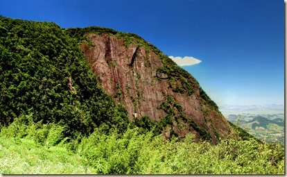
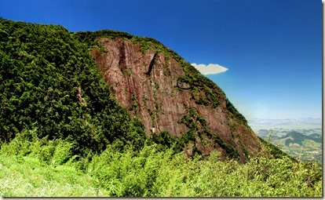
Criado em 2002, o Parque Estadual dos Três Picos é o maior parque estadual do Rio de Janeiro, abrangendo uma área de aproximadamente 65.113 hectares. Localizado na região serrana, o parque foi estabelecido com o objetivo de proteger a rica biodiversidade da Mata Atlântica e preservar as formações rochosas icônicas que dão nome ao parque.
O nome "Três Picos" faz referência às três montanhas que se destacam na paisagem e são consideradas um dos pontos mais altos da Serra do Mar, com 2.366 metros de altitude. Essas formações rochosas são um símbolo da região e atraem montanhistas e aventureiros de todo o Brasil.
Além de sua importância ambiental, o parque desempenha um papel fundamental na conservação dos recursos hídricos, abrigando nascentes e rios que abastecem diversas comunidades locais. Sua criação também reforça o compromisso com a preservação da cultura e história da região serrana do estado.
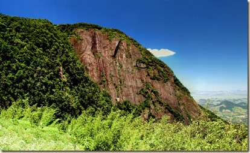
Percorra esta trilha bate-volta de 6,8 km, localizada perto de Nova Friburgo, Rio de Janeiro. Geralmente considerada um percurso desafiador, é preciso uma média de 3 horas e 6 minutos para ser concluída.
Essa trilha é popular para acampamento e caminhadas, mas você ainda pode encontrar momentos de tranquilidade nos horários mais calmos do dia. A trilha está aberta durante todo o ano e é linda para visitar em qualquer época.
Essa aventura leva você ao topo da Serra da Cabeça do Dragão, uma montanha situada no Parque Estadual dos Três Picos, em Nova Friburgo. O trajeto parte do Camping Mascarin e oferece vistas incríveis ao longo do caminho.
Certifique-se de levar água, protetor solar, calçados adequados e roupas confortáveis para aproveitar ao máximo essa jornada desafiadora e recompensadora.
Conheça esta trilha bate-volta de 8,9 km, localizada perto de Nova Friburgo, Rio de Janeiro. Geralmente considerada um percurso moderadamente desafiador, é preciso uma média de 3 horas e 4 minutos para ser concluída.
A trilha é ideal para backpacking e caminhadas, oferecendo uma experiência única em meio à natureza. Durante o percurso, você provavelmente não encontrará muitas outras pessoas, tornando o ambiente ainda mais tranquilo e imersivo.
Aberta durante todo o ano, a Trilha Cabeça do Dragão é linda para visitar em qualquer época. Certifique-se de levar água, protetor solar, calçados adequados e roupas confortáveis para aproveitar ao máximo essa aventura.
A Pedra do Elefante, localizada ao sul de Teresópolis, é uma formação rochosa icônica que recebeu esse nome devido ao seu formato, que lembra a cabeça e a tromba de um elefante. Essa característica única tornou a pedra um ponto de referência e um símbolo da região.
Ao longo dos anos, a Pedra do Elefante se tornou um destino popular para aventureiros e amantes da natureza, atraindo visitantes que buscam contemplar suas vistas panorâmicas e explorar a rica biodiversidade ao seu redor. Além disso, o local é conhecido por sua importância cultural e histórica, sendo frequentemente associado às belezas naturais da Serra dos Órgãos.
A Trilha Dois Bicos, localizada no Parque Natural Municipal Montanhas de Teresópolis, é uma excelente opção para aventureiros que buscam um desafio moderado. Com cerca de 2,3 km de extensão, a trilha atravessa trechos preservados da Mata Atlântica, proporcionando vistas incríveis e contato direto com a biodiversidade local.
Durante o percurso, é possível observar formações rochosas impressionantes, além de árvores nativas e diversas espécies de aves. É uma experiência ideal para quem deseja se conectar com a natureza e explorar um dos cenários mais belos da região.
Certifique-se de levar água, protetor solar, calçados adequados e roupas confortáveis para aproveitar ao máximo essa jornada emocionante e recompensadora.
Fique por dentro dos eventos e novidades do Parque Nacional da Serra dos Órgãos. Clique nos links abaixo para saber mais:
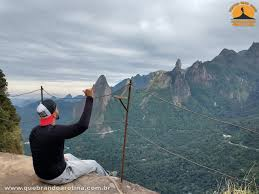
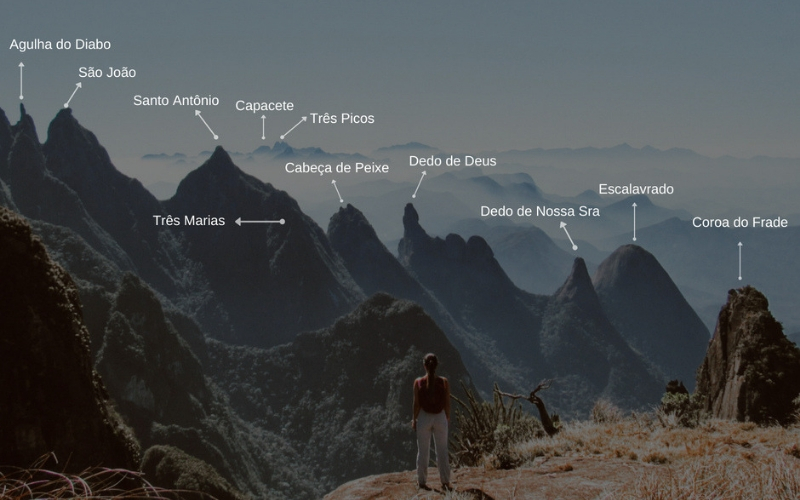
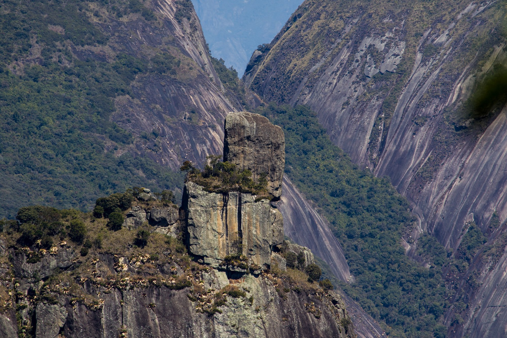
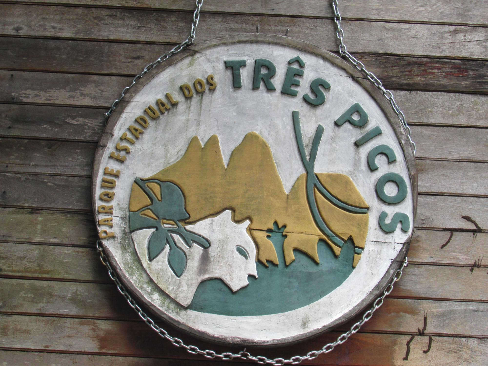
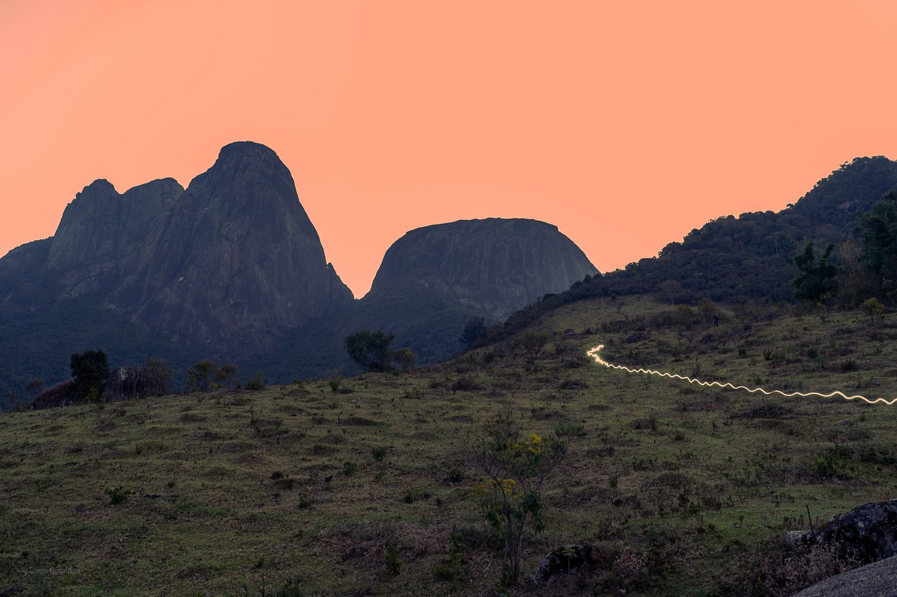
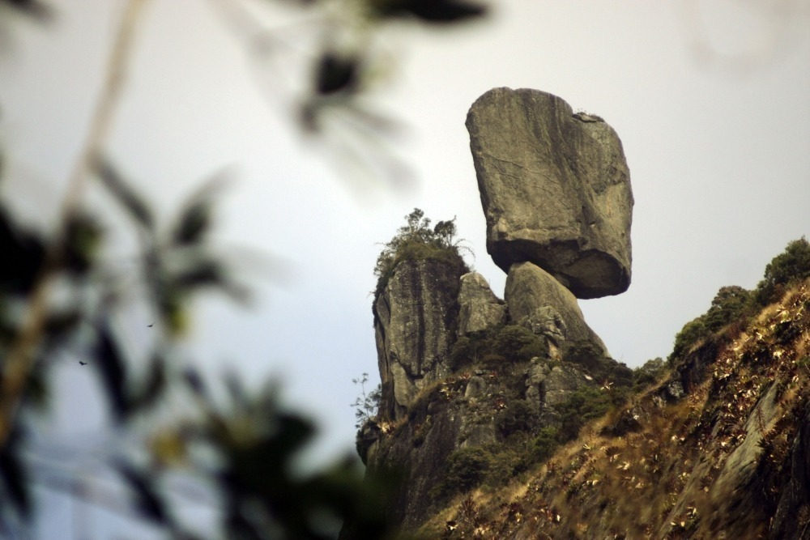
Muito além das trilhas, o Parque Estadual dos Três Picos oferece uma variedade de experiências inesquecíveis para quem busca natureza, aventura ou tranquilidade. Confira algumas das principais atrações:
O parque encanta com suas cachoeiras e poços naturais, perfeitos para relaxar e se refrescar:
Admire vistas deslumbrantes das montanhas e vales da região:
O parque conta com trilhas bem sinalizadas para todos os níveis de preparo físico:
Um verdadeiro refúgio da Mata Atlântica, com rica biodiversidade:
Aproveite espaços preparados para momentos de lazer em família:
O parque também promove aprendizado e conscientização ambiental:
Descubra trilhas incríveis para todos os níveis com nossos guias experientes.
O parque é lar de dezenas de espécies de aves, ideal para birdwatching.
Relaxe e refresque-se em cachoeiras cristalinas no meio da mata.
Aproveite áreas preparadas para piqueniques com a família.
O Parque Estadual dos Três Picos está cheio de novidades para os amantes da natureza e da aventura! Recentemente, foram inauguradas novas trilhas que oferecem vistas deslumbrantes das montanhas e vales da região. Essas trilhas foram projetadas para atender a diferentes níveis de preparo físico, desde caminhadas leves até percursos desafiadores para os mais experientes.
Além disso, as áreas de camping passaram por melhorias significativas, garantindo mais conforto e segurança para os visitantes. Agora, os campings contam com infraestrutura renovada, incluindo banheiros ecológicos, pontos de água potável e áreas de convivência para grupos.
O parque também está investindo em iniciativas de sustentabilidade, como projetos de reflorestamento e programas educativos para conscientizar os visitantes sobre a importância da preservação ambiental.
 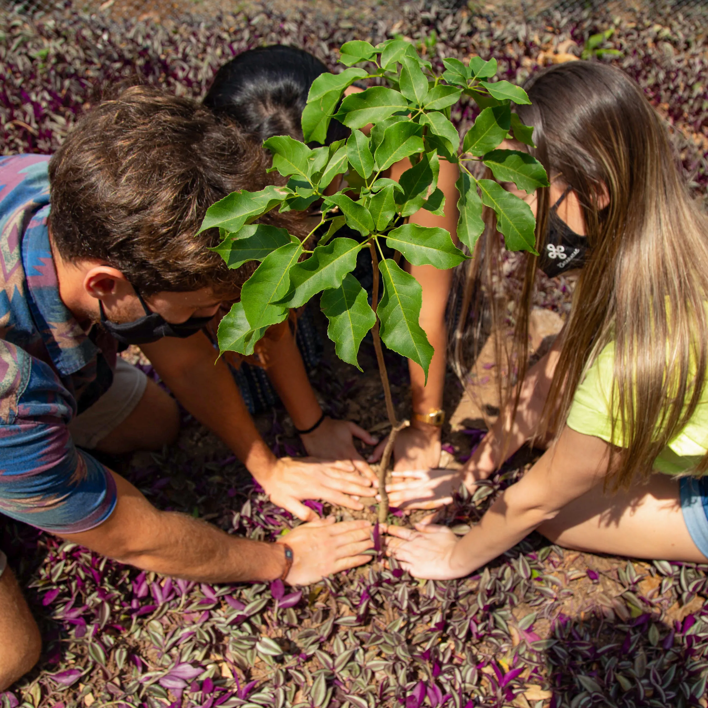
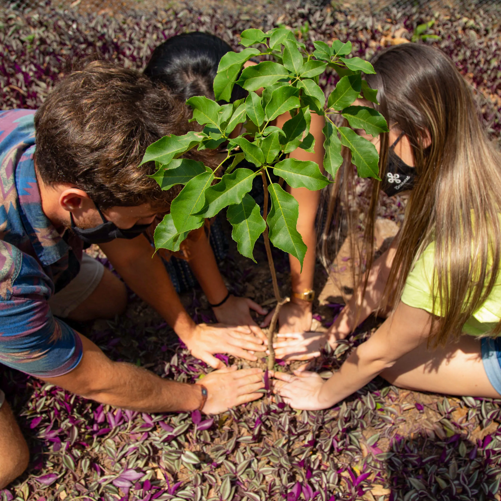
Venha conhecer as novidades e aproveitar tudo o que o Parque Estadual dos Três Picos tem a oferecer. A natureza espera por você!
Meudon, Teresópolis - RJ